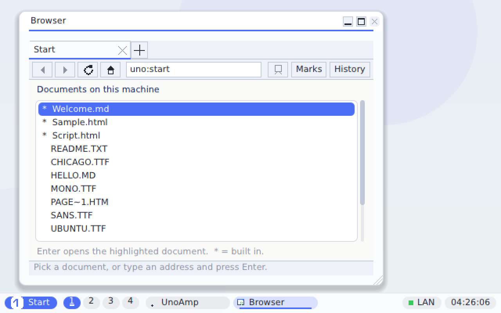
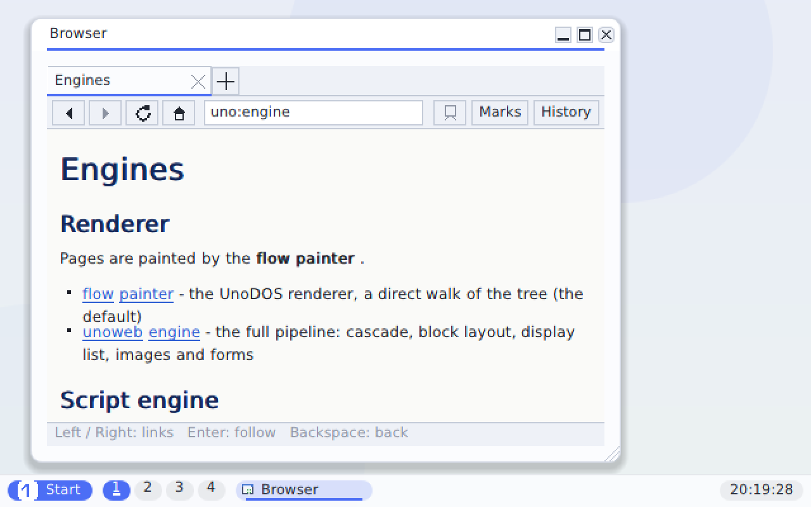
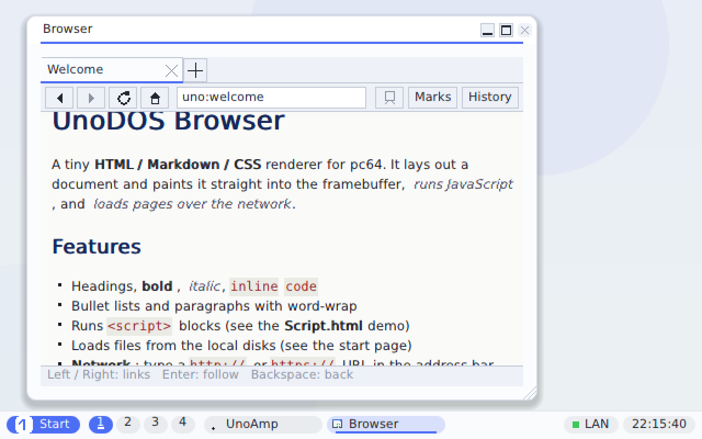
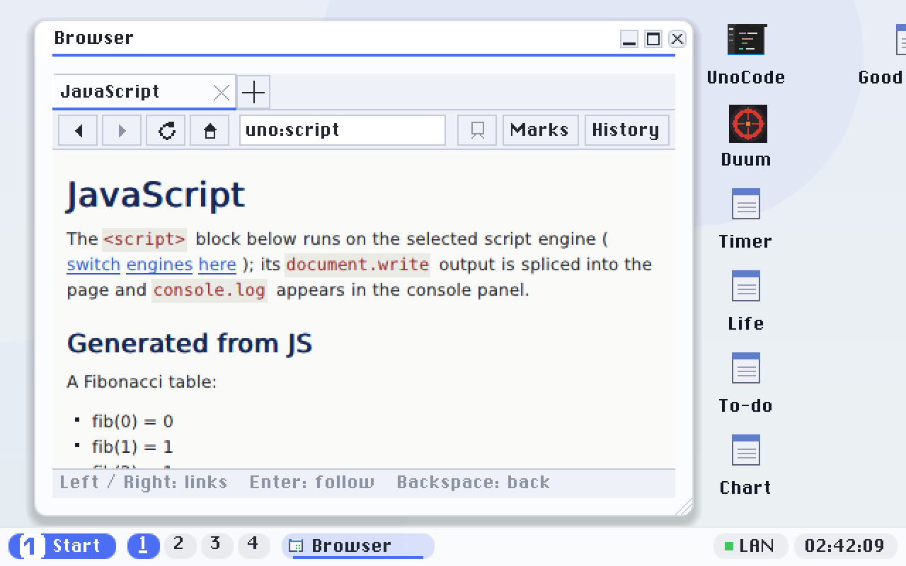
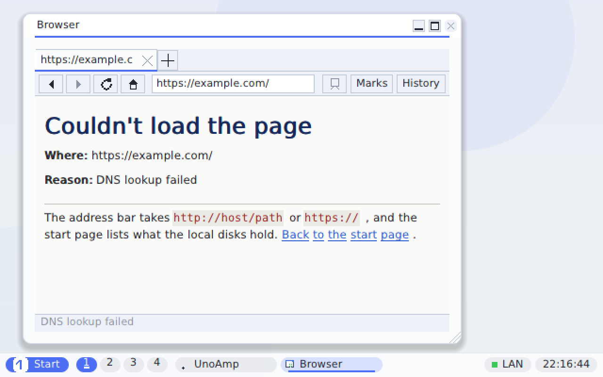

Web browser
A native canvas app that renders HTML, Markdown and basic CSS, runs JavaScript, and loads pages from local disks or over the network — HTTP and HTTPS.
Files and the address bar
The browser opens on a unified file list: volume 0 is the RAM disk, and volumes 1+ are the FAT /
FAT32 disks the firmware mounted (reached through the UEFI Simple File System protocol — the same
firmware-as-BIOS approach used for the framebuffer and pointer). RAM files and disk files are listed side
by side. An address bar at the top takes a http:// or https://
URL; press ↓ to drop into the file list, Enter to open, and Backspace to
return.

HTML, Markdown & CSS
A single immediate-mode flow lays out headings, word-wrapped paragraphs, <b>/<i>/<code>/<a>,
lists, <pre>, rules and entities — for both HTML and Markdown.


JavaScript
Each <script> block runs in a small tree-walking interpreter: a lexer, a
recursive-descent parser to an AST, and an evaluator supporting numbers/strings/booleans, var,
arithmetic and logic, if/for/while/ternary, functions and recursion,
arrays, Math.*, console.log and document.write. Its output is spliced
into the page; console.log collects into a console panel at the foot of the document.

<script> generated this Fibonacci table via document.write.Over the network
Give the address bar a URL and the browser brings the link up on demand (e1000 + DHCP), resolves the host by DNS, connects, sends an HTTP/1.0 GET and renders the reply — including any JavaScript.
